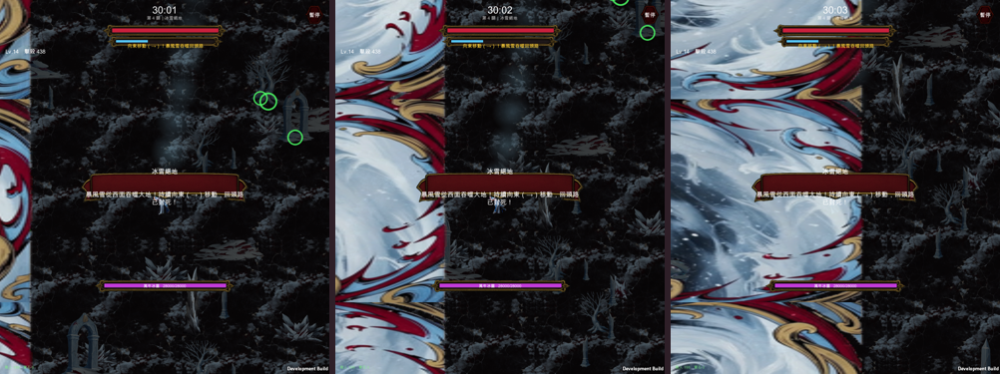
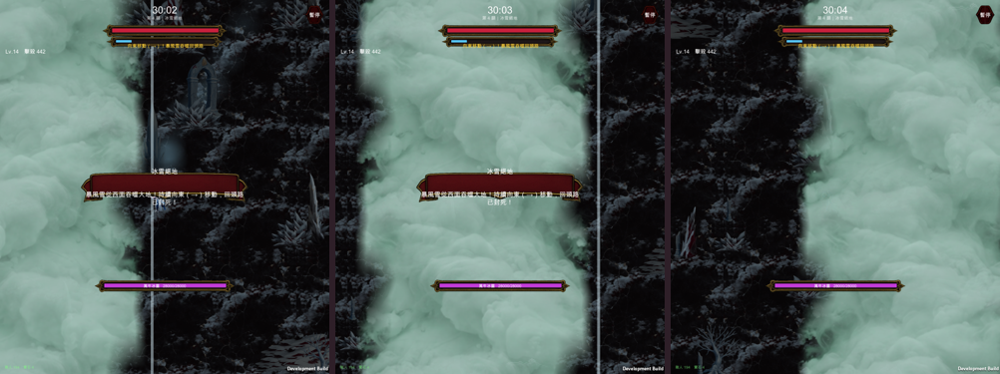
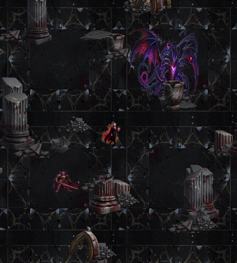
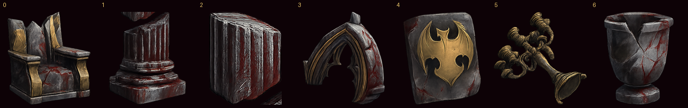
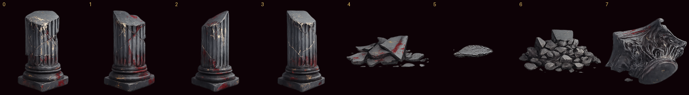

換之前
舊版
暴風雪牆已經換好並套用；魔王城堡是試樣，等你確認再進遊戲。


修正前 扣血線=-1.164 實邊=-1.164 雪的最右緣= 0.463（差 1.627） 修正後 扣血線=-1.468 實邊=-1.468 雪的最右緣=-1.468（差 0.000）
差 1.627 的原因：這張貼圖不是正方形（256×166），PPU 取貼圖高度，所以 bounds.size=(1.54,1.0)。localScale 直接設成想要的世界寬度，實際會寬 1.54 倍，整面牆的右緣就跑到扣血線右邊 1.6 個單位去。畫面上完全看不出來差這麼多，靠量才發現。



這一輪：雪牆影片 $0.32 ＋ 城堡 3 張生圖 $0.6 ≈ $0.92；場地與特效累計約 $5。沒有遇到 Grok 額度不足。